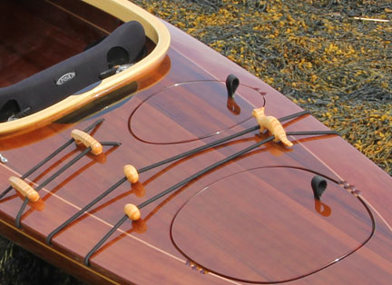
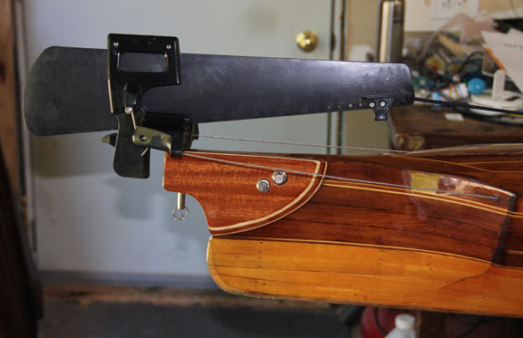
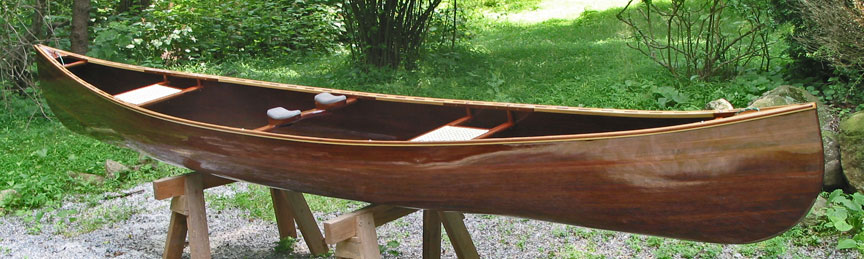

| Laughing Loon Kayak Features | ||||||||||||||
| The cockpit coaming in the photo below is 33" x 18" (outside dimensions) and gives you an idea of the hardwood laminations I use to make my coamings. The leading edge of the hardwood coaming is recessed to reduce spray, strengthen the deck and just look cool! If you are a tall person an option worth considering is a larger cockpit opening, going from the standard 33"X 18" to a 38" x 19" size will make entry /exit easier. Below left of the coaming on the deck is the control for the retractable skeg. There is a hardwood "mouse" you grab to adjust the skeg. The mouse is held on the deck with rare earth magnets. Lifting the mouse pulls the skeg cord from the clamcleat to drop the skeg. The skeg is adjusted by pulling the mouse forward with the line in the cleat to raise the skeg to different levels. A retractable skeg is a great aid in keeping the kayak on course in beam winds and stern quartering seas. |
||||||||||||||
| The seat is closed cell foam (won't absorb water) with a black neoprene covering. The backrest is an NSI adjustable backrest. Together they make an extremely comfortable seating system. Closed cell foam thigh pads are visible toward the front of the cockpit opening.
There are adjustable foot braces inside the cockpit to work together with the seat and thigh pads to hold you firmly in the cockpit for maximum power transfer, similar to the way clipless pedals work on a bike. In rough seas you can adjust the foot braces so you are tight in the cockpit. In calm conditions you can back off the foot braces for comfort. At the lower right of the cockpit is a stainless steel security loop to allow a lock system to be used to secure the kayak to your roof rack or other points to prevent theft if the kayak is left unattended. Shock cord bands across the deck, with hardwood adjusters, allow gear to be held, deck bags to be secured and paddles to be held when not in use or for self rescue reentry. |
||||||||||||||
| Above is a view of the skeg in the full down position. The small string attached to the skeg tip allows you to pull the skeg down easily if the skeg should become jammed closed for any reason.
This view of the baidarka stern shows the unique scalloped hull transition into a fixed rudder form which makes the kayak track beautifully. The hardwood toggle handle is secured with heavy line to lift and secure the kayak and to provide a hand hold for a swimmer. On deck is a shock cord with beads, a "paddle keeper" allowing a paddle to slide under to stow it on deck. And a finger loop on the hatch cover is used to remove the hatch cover from the strong hold of the rare earth magnets. |
||||||||||||||
| Above is a detail of the hatch cover system. Special, powerful, waterproof, rare earth magnets (black disks) buried in the hatch cover lip, align with mating pairs hidden under a veneer on the deck lip to seal the opening. The gray soft gasket material, visible on the hatch cover above, is compressed by a raised edge on the innermost deck lip to create a waterproof seal.
A notch cut into the deck edge / deck lip joint, drains water hitting the deck, from the area of the magnets before it can reach the gasket. The black webbing tether on the hatch cover connects to a mating quick release buckle inside the storage compartment. This hatch system is clean, strong, waterproof and beautiful. |
||||||||||||||
| The unique features of the baidarka style kayaks I build are the unusual bow and the stern. These features are part of the original skin covered, wood frame kayaks used by the Aleut eskimos of the Aleutian Island archipelago, dividing the warm north Pacific, from the cold Bering Sea west of Alaska. This area is where storms are born. The baidarka kayak had to be incredibly sea worthy to withstand the horrific constant sea storms natives faced as they set out daily to feed their families. I'm the first person in the world to translate the skin over wood frame design into a hard shell stripper sea kayak. The bow, pictured above, is called a bifurcated bow because it is split in two parts. The lower bow is a narrow "cutwater" slicing through the water creating a bow wave ahead of the fuller hull sections further along. This increases speed on a displacement hull preventing the bow from having to climb the bow wave, like the underwater "bulb" seen on ships. The upper bow is blunt, flared and full leading the high volume flaired fore deck. These features keep the bow from diving in big waves and gives a drier ride in rough water. There is no deep foot transition between the bow stem and the keel to cause broaching as in Greenland style kayaks. The lower bow sweeps up from the keel in a flowing curve which allows easy turning of the kayak and is a huge asset in surfing the kayak. |
||||||||||||||
| The baidarka stern is very full for added buoyancy to keep the stern high and fast, instead of sinking down in the valley created by the stern wave. The scalloped shape of the tail forms a fixed rudder for good tracking. The Aleut paddles to the left of the kayak are modeled on native paddles I handled in the collection of the Smithsonian in June 2009. The narrow blades are designed to allow a hand to slide smoothly to grip the blade end for a powerful sweep stroke. The blades though long and narrow have the same or more surface area as wide short Euro style paddles most common in outfitter's stores. These flexible all wood paddles are easy on arm joints, have low wind resistance and provide all the power you need with less drag over the long distance than Euro paddles. |
||||||||||||||
| The soft chine hull, combined with the features of the bow and stern, create a fast kayak. And, the hull "flair" above the waterline increases stability in rough seas. Light-weight construction is not only an advantage for portaging, or carrying the kayak to and from the water but light-weight translates into less energy propelling and turning the kayak. |
||||||||||||||
|  | ||||||||||||||
| If you will most often use the kayak for day trips, a day hatch might be useful. A day hatch is a small hatch cover accessing a small separate hull compartment. It is placed behind and to one side of the cockpit coaming and allows easy access to small items you want to stay dry but might want to use on the water. | ||||||||||||||
| The tethered hatch cover opens and closes easily with the self aligning magnets.
The rare earth magnet closing system not only seals tight, keeping your valuables dry, but closing the day hatch behind your back is literally a "SNAP" as the self aligning magnet pairs pull together, |
||||||||||||||
|
|
||||||||||||||
| Standard kayak features include: Hull and deck woods; northern white cedar (lights colors) and western red cedar (dark colors) White stripes basswood or white pine. Northern white cedar hull bottom; creates a highly visible feature for emergency rescue location. Hardwood accents, bow parts and coaming; mahogany, cherry, ash, flame maple, birds eye maple. Straight line stripe and solid wood patterns. T handles bow and stern to carry boat and to grab/secure on water. Fore and aft water tight bulkheads in front of the paddler's feet and behind the seat create waterproof storage and safety emergency floatation. Spirit decal or other personal graphic placed on stern bulkhead. 16" to 18" wide and 33" long cockpit coaming for easy entry/exit with Recessed fore cockpit coaming. Contact decal; name, address, phone number placed inside cockpit. Recessed hatch covers, with invisible, rare earth magnetic hatch cover hold downs. Low profile, native style, shock cord deck rigging through hull sheerline. Security stainless steel deck loop to lock boat to vehicle in transit 6 oz. E-glass fiberglass lay-up Carved closed cell foam seat covered in black neoprene with a North Shore Industries Anatomic Touring back band, an adjustable back support system. Makes this the most comfortable seating on the planet! All my stripper boat construction is of beautiful wood strips covered with fiberglass cloth and epoxy inside and outside for a very strong and lightweight composite boat. The final finish is marine spar varnish which can be refinished endlessly for a beauty not possible in production boats.
 Deck Lines $50 Carved deck hardware animals and spirit "effigies" and beads $20 - $200 and up |
||||||||||||||
| Cancellation Fees Due to the nature of custom work cancellation fees on boat deposits are as follows. 30 days 5% 60 days 10% 90 days 20% Commencement of work - deposit is non refundable |
||||||||||||||
|  | ||||||||||||||
|
Standard Canoes Features;
Scuppered gunnels Caned Seats /Sculpted Backrest Toggle handles 6 oz. E-glass fiberglass lay-up. Contact decal; name, address, phone number placed inside hull All my stripper boat construction is of beautiful wood strips covered with fiberglass cloth and epoxy inside and outside for a very strong and lightweight composite boat. The final finish is marine spar varnish which can be refinished endlessly for a beauty not possible in production boats. Canoe Options Decks - $500 - $1000 4 oz. S-glass fiberglass lay-up for lighter weight - $800 Carrying yoke - $200 I accept Visa/MC and offer a Discount for bank checks, personal checks and cash on payment for finished boats. |
||||||||||||||
| Cancellation Fees Due to the nature of custom work cancellation fees on boat deposits are as follows. 30 days 5% 60 days 10% 90 days 20% Commencement of work - deposit is non refundable |
||||||||||||||
Home / Pricing / Boat Orders / Plans Pricing / PLACE AN ORDER / Boats for Sale / Instruction / Videos / Kayak Plans
Kayaks / Magic / Mystic Star / Dark Star / Fire Star / Shooting Star / North Star / Ootek / Disko Bay / Georgian Bay / Panache / Twin Star Tandem
Canoe Designs / Laughing Loon Tandem Canoe / Solo Portage / Wee Robbie / Wee Vera / Wee Two / Canoe Plans / Kits / Paddles
Shop Tips / Stapleless Stripping / Hand Beveling / Transparent Lay-ups / Trips / Links